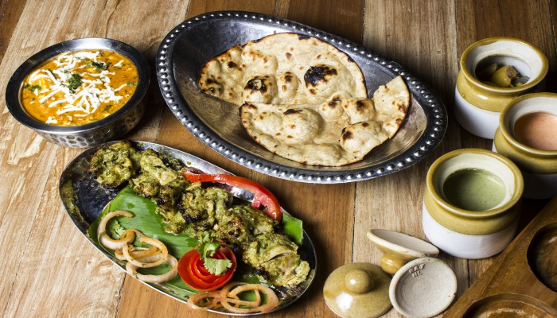

This Restaurant Serves All Kinds Of Indian Food You Will Ever Want To Try With Your Fam!
Want a break from the same old noodles, pizzas and burgers? Then treat yourself with exotic Pakistani delicacies, at Memon'sXtreme. After making a big name for itself in Karachi, the restaurant has now opened their doors in karachi. Specialising in Mughlai and Seafood, Memon'sXtreme. also serves authentic Pakistanii food. Apart from the scintillating ambience and the perfect seating arrangement, the walls of this restaurant tells a brief story in itself. So go ahead, explore and indulge with the medley of food at Memon'sXtreme..
Look out for these jim-dandy flavours!
This Restaurant Serves All Kinds Of Indian Food You Will Ever Want To Try With Your Fam!
Want a break from the same old noodles, pizzas and burgers? Then treat yourself with exotic Pakistani delicacies, at Memon'sXtreme. After making a big name for itself in Karachi, the restaurant has now opened their doors in karachi. Specialising in Mughlai and Seafood, Memon'sXtreme. also serves authentic Pakistanii food. Apart from the scintillating ambience and the perfect seating arrangement, the walls of this restaurant tells a brief story in itself. So go ahead, explore and indulge with the medley of food at Memon'sXtreme..